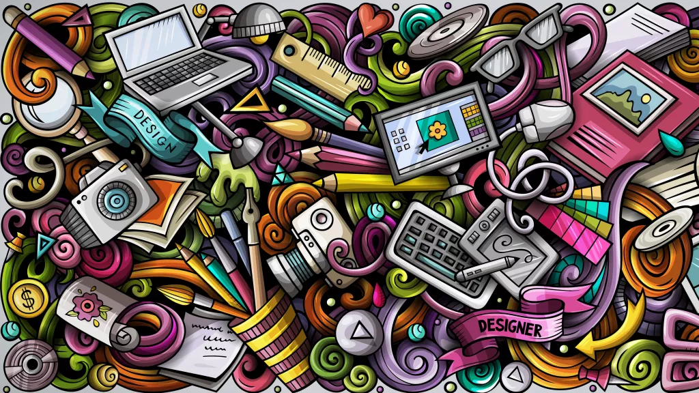
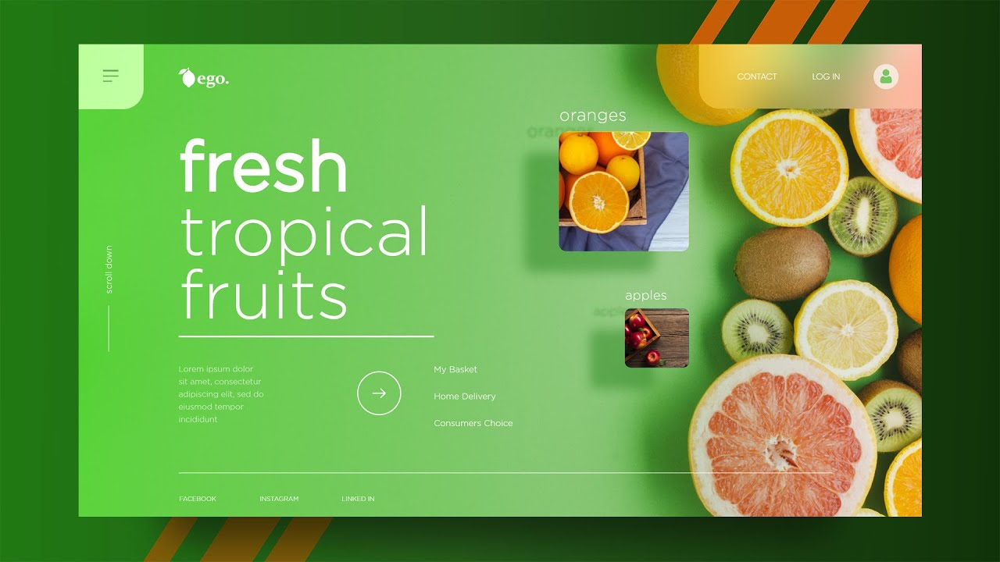

Por medio de las mejores técnicas de diseño, conseguimos destacar la información más relevante
de los productos de una empresa, para captar clientes potenciales y aumentar el rendimiento y productividad de la empresa.

Diseño de gráficos
Diseño de interfaces de usuario
La interfaz web son elementos gráficos que permiten al usuario acceder a los contenidos, navegar e interactuar.
Para lograr que un usuario se quede y vuelva, el diseño de la interfaz es importante.

Diseño de contenidos
El contenido web marca la diferencia entre dos empresas que compiten por la venta o oferta de los mismos productos o servicios.
Siempre se puede explicar algo mejor (por escrito, o con vídeos, o con mejores imágenes que la competencia), desde las ventajas de un
producto o el proceso de compra, hasta ofrecer consejo experto o curiosidades.

Desarrollo y programación
Contamos con un equipo de ingenieros, desarrolladores y programadores web expertos en desarrollo y programación a medida de software en la nube,
capaces de desarrollar y programar sistemas para los proyectos y plataformas web más exigentes.